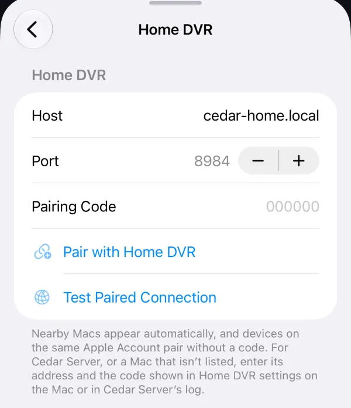
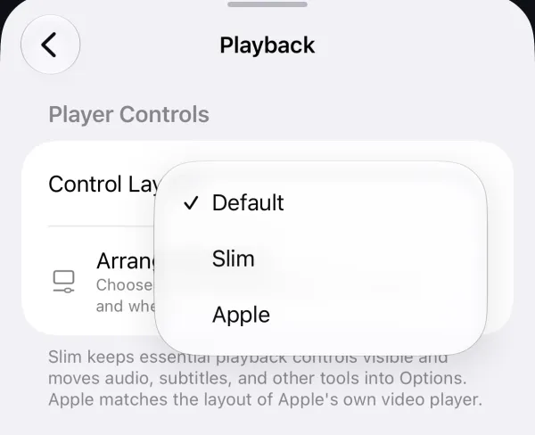

New
Cedar Server
Pair Cedar with the free Cedar Server container on a NAS, mini PC or Raspberry Pi. Cedar sends it your Live TV sources and guides, and recordings run with every app closed.

 CedarRelease notes
CedarRelease notes
External TestFlight
Cedar Server brings the Home DVR to a NAS, mini PC or Raspberry Pi, so recordings keep running with no Mac and every app closed. Recordings get a new page with what’s recording now, recent recordings and a grid of shows. Watch Together keeps playback in sync on a FaceTime call, and trailer previews play behind the Home hero from a trailer Tobacco Tie. On iPhone and iPad, a new Apple control layout matches the look of Apple’s TV app.
cedartv.github.io/cedar-tv-updates/apple/releases/1.0.0-build-80/
4 new, 1 improved
Pair Cedar with the free Cedar Server container on a NAS, mini PC or Raspberry Pi. Cedar sends it your Live TV sources and guides, and recordings run with every app closed.

A new Recordings page with Recording Now, Recent and a Shows grid, plus a Recordings Branch in Library. Watch Live joins a recording in progress just behind live.
On a FaceTime call, play a title for everyone and keep it in sync. Pick the name others see in Settings › Playback.
Add a trailer Tobacco Tie such as Trailerio and trailers play muted behind the Home hero, with a mute button.
Choose Apple in Settings › Playback › Player Controls › Control Layout for large glass buttons, a volume control, and Info, Episodes and Continue Watching pills.

5 new, 3 improved
Search shows actors and directors in their own rail. It’s hidden on Kids profiles.
Up to 40 results with exact title matches first, so regional versions of a show are no longer cut off.
Results scroll sideways in rails instead of a tall grid.
Portrait and Square Branch Groups show service and studio artwork with the logo, and portraits for people, instead of cropped lettering.
Seasons with more than 150 episodes split into 100-episode ranges you can jump between.
Cards with a partial progress bar offer Reset Progress. Your watch history stays.
Hold Select on the hero’s Go to button and choose Read Synopsis.
Rest the pointer on a poster to see its trailer in a floating card.
4 improved
Requirements now apply in Automatic mode too, resolutions and release types are single menus, and the Sorting Preset offers Custom.
Replaces the old preload option and also warms the stream saved by Reuse Last Link.
The timeline jumps to where you seeked and shows a spinner straight away, and repeated skips add up.
The Next Episode pill stays at the bottom and the post-play tile shows only the video.
2 new
Choose which Live TV sources Cedar Server can record from.
Settings › Notifications can hide the source and guide refresh pop-up on this device. Failed refreshes still show.
3 new, 2 improved
Silo servers play their copies, with progress and watched state kept in sync both ways.
Seerr gains Quick Connect and a Requested state that avoids duplicate requests. Silo servers can take requests too.
Each installed Tobacco Tie has an on/off switch in Settings, so you can keep it without using it.
AIOMetadata and other catalog links load whole catalogs, import anime lists and answer Search.
The Upcoming calendar fills again, and episodes released today show Out Today.
7 fixed
3 known issues